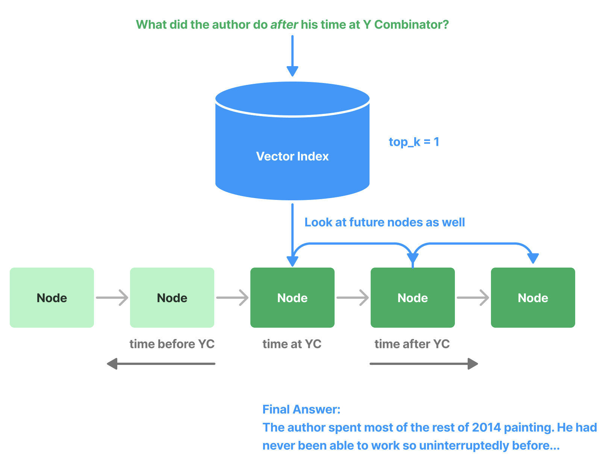

节点后处理器模块#
SimilarityPostprocessor#
用于移除相似度分数低于阈值的节点。
from llama_index.core.postprocessor import SimilarityPostprocessor
postprocessor = SimilarityPostprocessor(similarity_cutoff=0.7)
postprocessor.postprocess_nodes(nodes)
KeywordNodePostprocessor#
用于确保排除或包含特定关键词。
from llama_index.core.postprocessor import KeywordNodePostprocessor
postprocessor = KeywordNodePostprocessor(
required_keywords=["word1", "word2"], exclude_keywords=["word3", "word4"]
)
postprocessor.postprocess_nodes(nodes)
MetadataReplacementPostProcessor#
用于用节点元数据中的字段替换节点内容。如果元数据中不存在该字段，则节点文本保持不变。与 SentenceWindowNodeParser 结合使用时最为有效。
from llama_index.core.postprocessor import MetadataReplacementPostProcessor
postprocessor = MetadataReplacementPostProcessor(
target_metadata_key="window",
)
postprocessor.postprocess_nodes(nodes)
LongContextReorder#
模型难以获取长文本中间部分的重要细节。一项研究发现，当关键数据位于输入上下文开头或结尾时，通常能获得最佳性能。此外，随着输入上下文长度增加，性能会显著下降，即使是专为长上下文设计的模型也不例外。
该模块会对检索到的节点重新排序，在需要较大 top-k 值的情况下特别有用。
from llama_index.core.postprocessor import LongContextReorder
postprocessor = LongContextReorder()
postprocessor.postprocess_nodes(nodes)
SentenceEmbeddingOptimizer#
该后处理器通过移除与查询无关的句子（使用嵌入技术实现）来优化令牌使用。
百分位截断值用于保留相关性最高的前百分之几的句子。
也可以指定阈值截断，直接使用相似度阈值来决定保留哪些句子。
from llama_index.core.postprocessor import SentenceEmbeddingOptimizer
postprocessor = SentenceEmbeddingOptimizer(
embed_model=service_context.embed_model,
percentile_cutoff=0.5,
# threshold_cutoff=0.7
)
postprocessor.postprocess_nodes(nodes)
完整笔记本指南参见此处
CohereRerank#
使用"Cohere ReRank"功能对节点重新排序，并返回前N个节点。
from llama_index.postprocessor.cohere_rerank import CohereRerank
postprocessor = CohereRerank(
top_n=2, model="rerank-english-v2.0", api_key="YOUR COHERE API KEY"
)
postprocessor.postprocess_nodes(nodes)
完整笔记本指南参见此处。
SentenceTransformerRerank#
使用 sentence-transformer 包中的交叉编码器对节点重新排序，并返回前N个节点。
from llama_index.core.postprocessor import SentenceTransformerRerank
# 我们选择了一个速度较快且准确度尚可的模型
postprocessor = SentenceTransformerRerank(
model="cross-encoder/ms-marco-MiniLM-L-2-v2", top_n=3
)
postprocessor.postprocess_nodes(nodes)
完整笔记本指南参见此处。
更多模型列表（包括速度/准确度权衡）请参考sentence-transformer文档。默认模型是cross-encoder/ms-marco-TinyBERT-L-2-v2，它提供了最快的速度。
LLM Rerank#
使用LLM对节点重新排序，要求LLM返回相关文档及其相关性评分。返回前N个排名节点。
from llama_index.core.postprocessor import LLMRerank
postprocessor = LLMRerank(top_n=2, service_context=service_context)
postprocessor.postprocess_nodes(nodes)
完整笔记本指南参见Gatsby版本和Lyft 10K文档版本。
JinaRerank#
使用"Jina ReRank"功能对节点重新排序，并返回前N个节点。
from llama_index.postprocessor.jinaai_rerank import JinaRerank
postprocessor = JinaRerank(
top_n=2, model="jina-reranker-v1-base-en", api_key="YOUR JINA API KEY"
)
postprocessor.postprocess_nodes(nodes)
完整笔记本指南参见此处。
FixedRecencyPostprocessor#
该后处理器按日期排序返回前K个节点。假设每个节点的元数据中包含可解析的date字段。
from llama_index.core.postprocessor import FixedRecencyPostprocessor
postprocessor = FixedRecencyPostprocessor(
tok_k=1, date_key="date" # 元数据中用于查找日期的键
)
postprocessor.postprocess_nodes(nodes)

完整笔记本指南参见此处。
EmbeddingRecencyPostprocessor#
该后处理器在按日期排序后返回前K个节点，并移除嵌入相似度过高的旧节点。
from llama_index.core.postprocessor import EmbeddingRecencyPostprocessor
postprocessor = EmbeddingRecencyPostprocessor(
service_context=service_context, date_key="date", similarity_cutoff=0.7
)
postprocessor.postprocess_nodes(nodes)
完整笔记本指南参见此处。
TimeWeightedPostprocessor#
该后处理器应用时间加权重新排序返回前K个节点。每次检索节点时，会记录检索时间。这使搜索偏向于尚未在查询中返回的信息。
from llama_index.core.postprocessor import TimeWeightedPostprocessor
postprocessor = TimeWeightedPostprocessor(time_decay=0.99, top_k=1)
postprocessor.postprocess_nodes(nodes)
完整笔记本指南参见此处。
(Beta) PIINodePostprocessor#
PII（个人身份信息）后处理器会移除可能存在安全风险的信息。通过使用NER（可以是专用NER模型或本地LLM模型）实现。
LLM版本#
from llama_index.core.postprocessor import PIINodePostprocessor
postprocessor = PIINodePostprocessor(
service_context=service_context # 应配置为您信任的LLM
)
postprocessor.postprocess_nodes(nodes)
NER版本#
此版本使用Hugging Face的默认本地模型，运行pipeline("ner")时加载。
from llama_index.core.postprocessor import NERPIINodePostprocessor
postprocessor = NERPIINodePostprocessor()
postprocessor.postprocess_nodes(nodes)
两者的完整笔记本指南参见此处。
(Beta) PrevNextNodePostprocessor#
使用预定义设置读取Node关系，并获取之前、之后或两者所有的节点。
当您知道关系指向重要数据（之前、之后或两者）且该节点被检索时应发送给LLM时，这非常有用。
from llama_index.core.postprocessor import PrevNextNodePostprocessor
postprocessor = PrevNextNodePostprocessor(
docstore=index.docstore,
num_nodes=1, # 向前或向后查找时要获取的节点数量
mode="next", # 可以是'next'、'previous'或'both'
)
postprocessor.postprocess_nodes(nodes)

(Beta) AutoPrevNextNodePostprocessor#
与PrevNextNodePostprocessor相同，但让LLM决定模式（next、previous或both）。
from llama_index.core.postprocessor import AutoPrevNextNodePostprocessor
postprocessor = AutoPrevNextNodePostprocessor(
docstore=index.docstore,
service_context=service_context,
num_nodes=1, # 向前或向后查找时要获取的节点数量
)
postprocessor.postprocess_nodes(nodes)
完整示例笔记本参见此处。
(Beta) RankGPT#
使用RankGPT代理根据相关性重新排序文档。返回前N个排名节点。
from llama_index.postprocessor.rankgpt_rerank import RankGPTRerank
postprocessor = RankGPTRerank(top_n=3, llm=OpenAI(model="gpt-3.5-turbo-16k"))
postprocessor.postprocess_nodes(nodes)
完整笔记本指南参见此处。
Colbert Reranker#
使用Colbert V2模型作为重新排序器，根据查询令牌和段落令牌之间的细粒度相似度重新排序文档。返回前N个排名节点。
from llama_index.postprocessor.colbert_rerank import ColbertRerank
colbert_reranker = ColbertRerank(
top_n=5,
model="colbert-ir/colbertv2.0",
tokenizer="colbert-ir/colbertv2.0",
keep_retrieval_score=True,
)
query_engine = index.as_query_engine(
similarity_top_k=10,
node_postprocessors=[colbert_reranker],
)
response = query_engine.query(
query_str,
)
完整笔记本指南参见此处。
rankLLM#
使用 rankLLM 中的模型对文档进行重新排序。返回前 N 个排名最高的节点。
from llama_index.postprocessor.rankllm_rerank import RankLLMRerank
# RankZephyr 重排序器，返回前5个候选结果
reranker = RankLLMRerank(model="rank_zephyr", top_n=5)
reranker.postprocess_nodes(nodes)
完整示例可参考此笔记本。